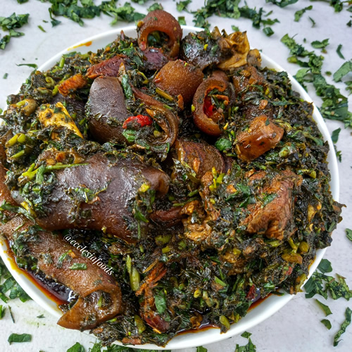

Afang Soup

Description
This delicious, hearty and loaded comforting soup is made with okazi leaves and waterleaf. It is popularly eaten in Nigeria with pounded yam and best served warm.
Ingredients
- Okazi leaves
- Waterleaf/spinach
- Cow foot
- Goat meat
- Smoked ponmo(cow skin)
- Dried catfish/smoked fish
- Salt
- Seasoning(bouillon cubes)
- Scotch bonnet pepper
- Palm oil
Directions
- Soak the okazi leaves for several minutes. Place 5 cups (500 g) of dried okazi leaves in a large bowl. Cover them with hot water, and allow them to soak for at least 10 minutes to soften them a bit.
- Wash the leaves. After the leaves have soaked for a while, dump out the water. Leave the okazi in the bowl, and run fresh water over them. Use your hands to move the leaves as the water falls over them to clean them thoroughly.
- Drain the leaves completely. Once you have washed the leaves, transfer them to a colander to get rid of all of the water. Shake the colander well to ensure that you remove all of the excess moisture. Set the leaves aside for the moment
- Combine the water, meat, salt, pepper, maggi, and onion in a pot. Add 2 to 3 cups (473 to 710 ml) of water, 1 to 2 pounds (454 to 907 g) of cubed beef, 1/2 medium onion that has been chopped, 2 maggi cubes, and some salt and pepper to a large stock pot. Mix the ingredients well to ensure that they are well blended.
- Bring the mixture to a boil. Place the pot with the mixture on the stove, and turn the heat to medium-high. Allow the mixture to come to a boil, which may take 10 to 15 minutes.
- Cook the mixture until the beef is tender. Once the mixture comes to a boil, lower the heat to medium. Cover the pot, and allow the mixture to simmer until the meat is extremely tender, which should take approximately 1 to 2 hours.
- Mix in the shredded fish, crayfish, pepper, and palm oil. When the beef is tender, add 1/2 pound (227 g) of smoked fish, ½ cup (73 g) of crayfish, freshly ground black pepper to taste, and 2 cups (473 ml) of red palm oil to the pot. Stir well to ensure that all of the ingredients are combined.
- Cover the pot and simmer the soup for several minutes. When all of the ingredients are mixed, place the lid on the pot. Allow the soup to simmer on medium for 10 minutes, so the flavors have time to meld.
- Stir well and taste the mixture to adjust seasoning. After the soup has simmered for a while, mix it up to well to ensure that the flavors are blended. Taste a little of it, and add more salt and pepper if necessary.
- Blend the okazi leaves to soften and smooth them. Place the soaked okazi leaves in a blender with 1 to 2 tablespoons (15 to 30 ml) of water. Pulse the leaves several times until they reach your desired level of smoothness.
- Stir the okazi into the soup. When the okazi leaves have reached your desired smoothness, add them to the soup mixture. Mix well to ensure that the leaves are fully incorporated.
- Add the water leaves. Stir 6 cups (1350 g) of finely chopped fresh water leaves to the soup. Mix well to ensure that they are fully incorporated.
- Simmer the mixture for several minutes. When all of the ingredients are combined, allow the soup to cook for another 5 to 10 minutes to wilt the greens and blend the flavors. Taste the soup again, and add more salt and pepper if necessary.
- Remove the soup from the heat and enjoy. When you're happy with the flavor of the soup, take the pot off the heat. Ladle it into bowls, and serve while it is still hot.